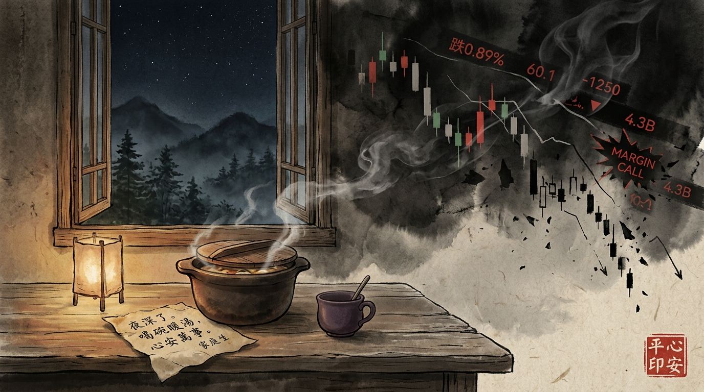

第一卷：破妄卷
第 001 講
2026-10-08
已解鎖
被槓桿撕裂的靈魂：在帳戶歸零的那一夜，照見的人性

宣紙水墨意象 · 台灣南投與中國雲南雙基地風土
大道至簡 · 台灣南投與中國雲南雙基地真實
一百零八顆智慧念珠，破除一百零八個資本妄念。
以冷酷專業穿透財報虛妄，以真實故事照見人性微光，以純粹理性安頓身心。

所有 108 篇已預先編譯入庫。即使作者電腦關閉，系統每日午夜根據時間自動點亮解鎖。